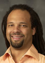

Falculty Information
Marcus Darden
Bio
Marcus Darden has been teaching at Olivet College for twelve years. He has been the major force behing the development of the Computer Science program at Olivet. Marcus has a Masters Degree in Computer Science from the University of Michigan.
Michael Fredericks

Bio
Michael Fredericks has been teaching at Olivet College for 11 years. He has worked along side Marcus in developing the Computer Science Program at Olivet. Michael has a Maseters Degree in Information Systems Administration from Central Michigan. He is also certified in Microsoft Office Suite.